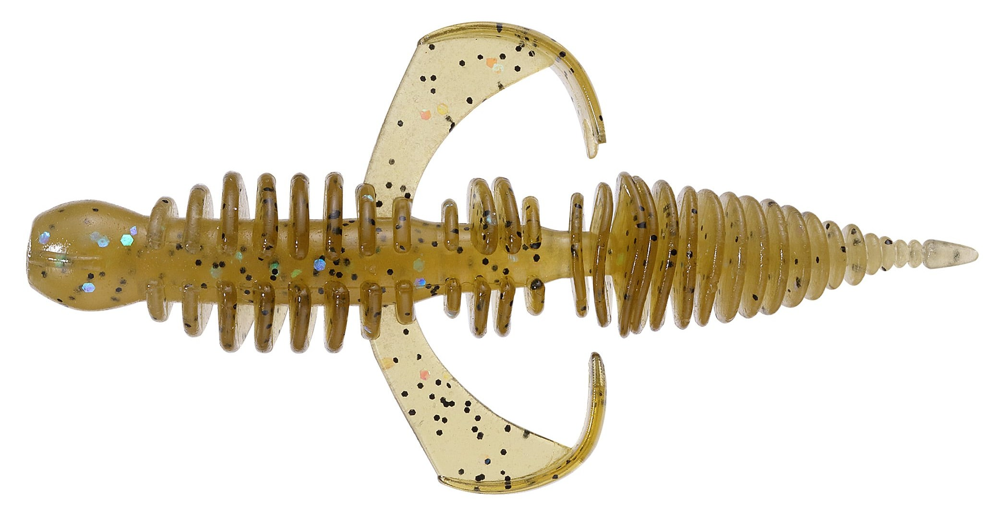
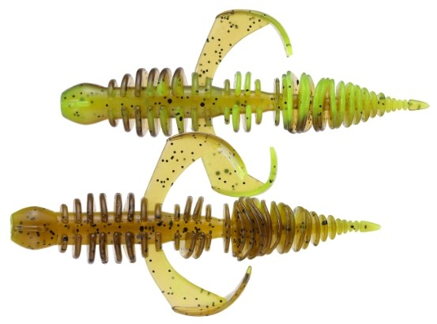
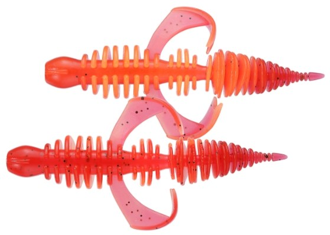

コーヴァイチュー2.8インチ
（CO-VIE-CHOO 2.8inch）
コーヴァイチュー2.8インチ（CO-VIE-CHOO 2.8inch）はSMITH（スミス）のチニング用ワームです。
チヌ・キビレの習性を詳細に探求することから生まれたフリーリグ・チニング専用設計のワームです。「アタリはあるけど簡単に釣れない」というチニングの釣果を上げるために、チヌの歯・バイトの仕方・追い食い・好む動きという4つの習性を起点に開発されました。

画像出典:SMITH公式HP
スペック
- メーカー
- SMITH（スミス）
- タイプ
- チニング用ワーム（フリーリグ専用設計）
- サイズ
- 2.8インチ
- カラー
- 全6色
- 入数
- 6本
- 推奨フック
- オフセットフック#1／カット時は#2
- 推奨シンカー
- タングステン1/4oz（7g）・3/8oz（10.5g）
- ターゲット
- チヌ（クロダイ）・キビレ
- 価格
- 726円（メーカー希望小売価格）
▼今すぐチェック

コーヴァイチュー2.8インチの特徴
チヌの4つの習性に合わせて、素材・形・動きを決めたワーム
-
強い歯でもボロボロになりにくい硬めの素材
チヌは貝や甲殻類を噛み砕く細かい歯を持ち、柔らかいワームは一発でボロボロにされてしまう。何度もバイトさせるために、わりと硬めの素材を採用している。
-
フックポイントを狙わせるアームの位置
チヌはルアーを丸呑みせず、小さな口で噛みつく。ボディのリブと細いテールで誘い、水押しの強いアーム部分にバイトさせてフックアップさせるイメージで、アームの位置を決めている。
-
追い食いを逃さない2段くびれ
何度も追い食いしてくるチヌに対して、最初のバイトでワームがずれないよう、硬めの素材とフックの収まりが良い2段くびれのフォルムにこだわった。
-
一定の動きを出すアームとテール
チヌは突発的な動きより一定の動きに興味を示す。アームは水押しの強いコンパクトなカーリー形状、テールはよく動いてミスバイトが起きにくい長さ。リングパーツは静止状態でも繊細に動く数・厚み・間隔にしている。
コーヴァイチュー2.8インチの使い方
フリーリグにセットしてボトムを取り、シンカーがボトムを叩く凸凹を感じながら一定の速度でただ巻きするのが基本です。公式では、ハイギアのリールで1秒に1回転程度が目安とされています。
障害物がある場所では一定のリズムで小刻みにシェイクしながらズル引きし、ロッドでサビいてからリールを巻いて戻す「ほうき引き」も有効です。どの方法でも「常にボトムで一定のアクション」を意識しましょう。
コーヴァイチュー2.8インチの得意な状況
河口付近や、潮の干満の影響がある水深2m程度までの浅瀬が主なポイントです。1mも無いような浅瀬にもチヌは入ってくるので、足元から沖までボトムを丁寧に引いて探りましょう。
アームパーツをカットした「微波動モード」や、頭の部分をカットして短くする使い方もできるので、反応が渋い時はシルエットや波動を落として試せます。
ワンポイント
公式のタックル例は、7〜9ftのメバル・バス（ベイトフィネス）・エギング・シーバスロッドに、PE0.8号＋フロロリーダー12lb。ズル引きの釣りなのでベイトタックルがオススメとされています。ウェーディングする時はエイに注意し、ライフジャケットも必ず着用しましょう。
オススメカラー
コーヴァイチュー2.8インチは全6色。そのうち4色を紹介します。
 01.グリーンパンプキン
01.グリーンパンプキン
チニングの定番。まず1つ選ぶならこの色。

02.ステルスサンドバック砂地になじむナチュラル系。澄んだ水や見切られやすい時に。

04.グリパンチャートチャートでアピールを足したい濁りの時に。

05.レッドオレンジ赤オレンジ系の強めのカラー。ナイトや濁りの時に。
画像出典:SMITH公式HP
コーヴァイチュー2.8インチに似ているルアー
-
 シルバーウルフ アーバンクローラー2.5
DAIWA
詳細はこちら＞
シルバーウルフ アーバンクローラー2.5
DAIWA
詳細はこちら＞
同じくフリーリグチニング専用。センタースリットで裏返しても使える。
-
 クレイジーフラッパー2.8インチ
KEITECH
詳細はこちら＞
クレイジーフラッパー2.8インチ
KEITECH
詳細はこちら＞
ウデが大きく動くクローワーム。アピールを強めたい時の持ち替え先に。
-
 沈み蟲
issei
詳細はこちら＞
沈み蟲
issei
詳細はこちら＞
高比重の虫系ワーム。チヌにもバスにも使える食わせの1本。